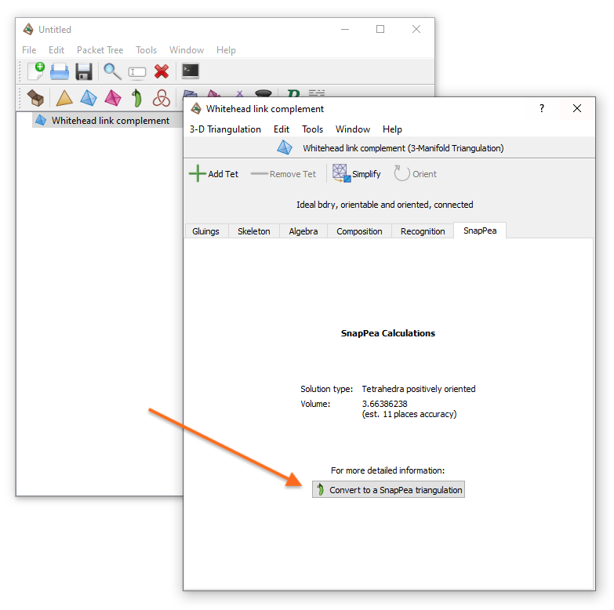
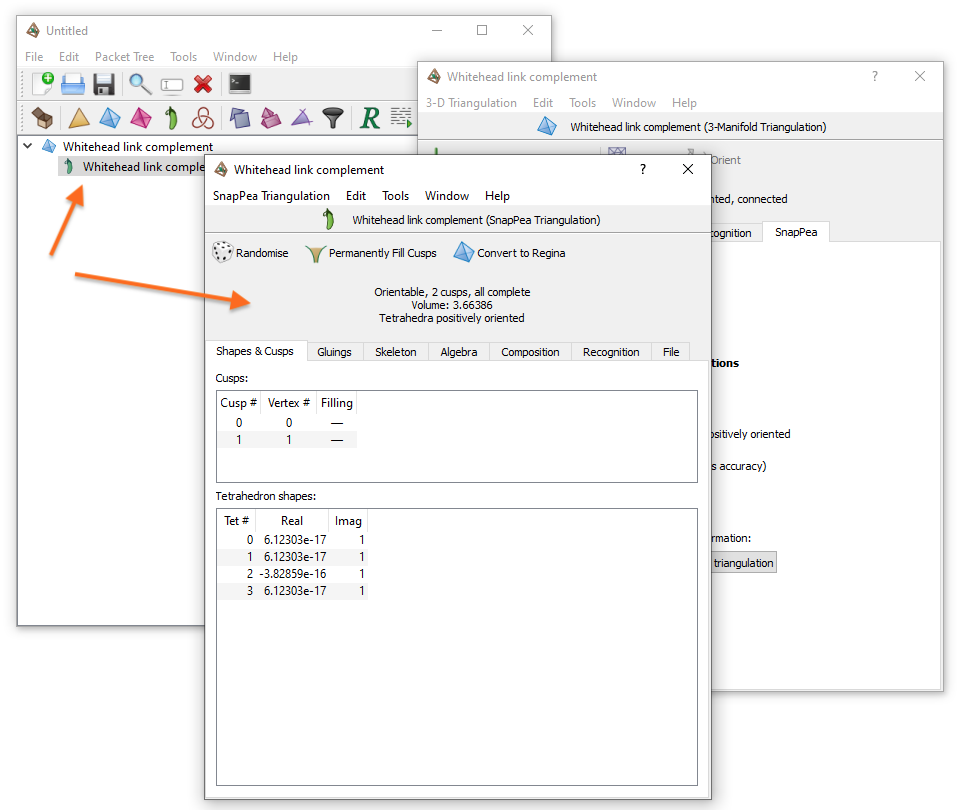
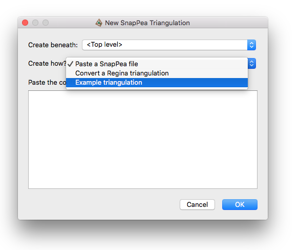
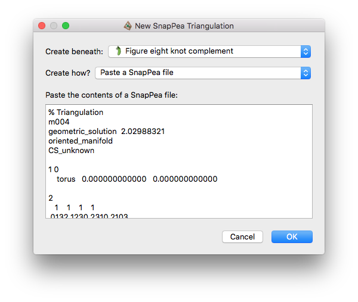
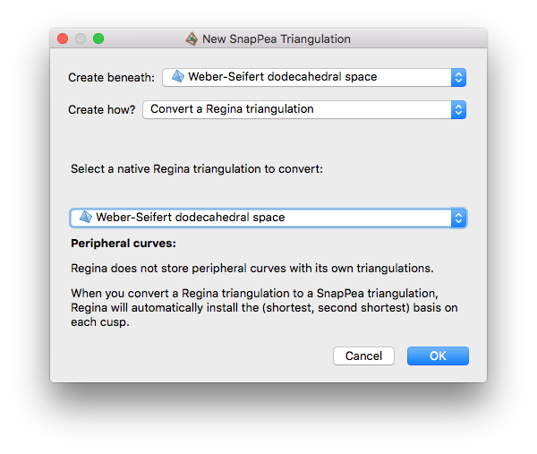

SnapPea Triangulations | |
| Prev | Next |
Table of Contents
For 3-manifolds, Regina's native triangulation structure is the triangulation packet, as described in the previous chapter. This structure is best suited for fine-grained analysis and manipulation of the triangulation, and gives you full access to all of Regina's topological algorithms.
However, if you are working with hyperbolic 3-manifolds then it is sometimes desirable to work with both Regina and SnapPea / SnapPy simultaneously, and to preserve data that only SnapPea knows about (such as fillings and peripheral curves) as it passes through Regina.
The solution is the SnapPea triangulation packet. This is a hybrid structure that maintains two synchronised copies of a 3-manifold triangulation, one using Regina's internal structures and one using SnapPea's internal structures.
The advantages of using a SnapPea triangulation are:
For read-only routines, you have direct internal access to both Regina's and SnapPea's mathematical engines. For instance, you can enumerate normal surfaces or angle structures (using Regina's engine), and you can search for a complete hyperbolic structure using given filling coefficients (using SnapPea's engine). All of this is available directly in Regina's user interface.
As noted above, SnapPea-specific information (such as peripheral curves or filling coefficients) will never be lost. You can import from a SnapPea / SnapPy data file, work with it in Regina's user interface, and then export it back to SnapPea / SnapPy. Throughout this process, all of SnapPea's own data such as filling coefficients and peripheral curves will be preserved.
The disadvantages are:
For read-write routines, your access to Regina is much more restricted. Specifically, you cannot modify the triangulation using Regina's mathematical engine (e.g., you cannot perform a 2-0 edge move or a barycentric subdivision). You can still modify the triangulation using SnapPea's engine (so, for instance, you can permanently fill cusps, or use SnapPea to randomise the triangulation).
This restriction is enforced by the user interface, and also at the Python level. In Python you can of course still call Regina's modification functions, but if you do so then the triangulation will delete itself and become a “null triangulation” instead.
There is extra overhead, both in memory and running time. This is because each SnapPea triangulation maintains two internal copies of the triangulation using two independent pieces of mathematical software.
Warning
Be aware that much of the information gained through the SnapPea kernel is inexact. In particular, it may be subject to numerical instability or floating point error. If you wish to rigorously certify that a manifold is hyperbolic, see the recognition tab (which works with both Regina's native triangulations and also SnapPea triangulations).
It is easy to convert one of Regina's native 3-manifold triangulation packets into a SnapPea triangulation. To do this, open the Regina triangulation and then either:
select → from the menu, or
switch to the SnapPea tab in the triangulation viewer, and press the button marked Convert to a SnapPea triangulation.

This will create a new SnapPea triangulation immediately beneath the original (native) triangulation in the packet tree; the original will be left untouched.

If your original triangulation is a closed manifold, then SnapPea will drill out a curve and present the SnapPea triangulation as a cusped manifold with a Dehn filling.
Regarding peripheral curves: during the conversion process, Regina will ask SnapPea to install the (shortest, second shortest) basis on each cusp. Note however that this is only possible if SnapPea finds a sufficiently good solution to the gluing equations (either tetrahedra positively oriented, or contains negatively oriented tetrahedra). Even then, this choice might not be unique for some cusp shapes, and the resolution of such ambiguities might be machine-dependent. If SnapPea cannot find a sufficiently good solution then it will install a default basis (which may change across different versions of the SnapPea kernel).
To create a new SnapPea triangulation, select → from the menu (or the corresponding toolbar button).
You will be asked how you wish to create the SnapPea triangulation (see the drop-down box below). Here we walk through the various options.

Here you can paste the entire contents of a SnapPea / SnapPy data file
into the given box, and Regina will build the corresponding
triangulation. You might, for instance, have obtained these file
contents by opening a SnapPea data file in a text editor, or by
calling Manifold._to_string() in SnapPy.

If you simply wish to use a SnapPea / SnapPy data file on your hard drive, you might find it easier to import the SnapPea file directly. This will have the same effect: it will create a SnapPea triangulation, and none of SnapPea's own data will be lost.
This allows you to select one of Regina's native 3-manifold triangulations from your current file and convert it into a SnapPea triangulation. This is exactly the same as opening the Regina triangulation and converting it through the SnapPea tab, as discussed earlier.

If you simply wish to use a SnapPea / SnapPy data file on your hard drive, you might find it easier to import the SnapPea file directly. This will have the same effect: it will create a SnapPea triangulation, and none of SnapPea's own data will be lost.
As already noted, you can import a SnapPea / SnapPy data file into Regina; this will automatically create a SnapPea triangulation for you. See the chapter on imports and exports for details.
| Prev | Contents | Next |
| Modification | Up | Analysis and Modification |